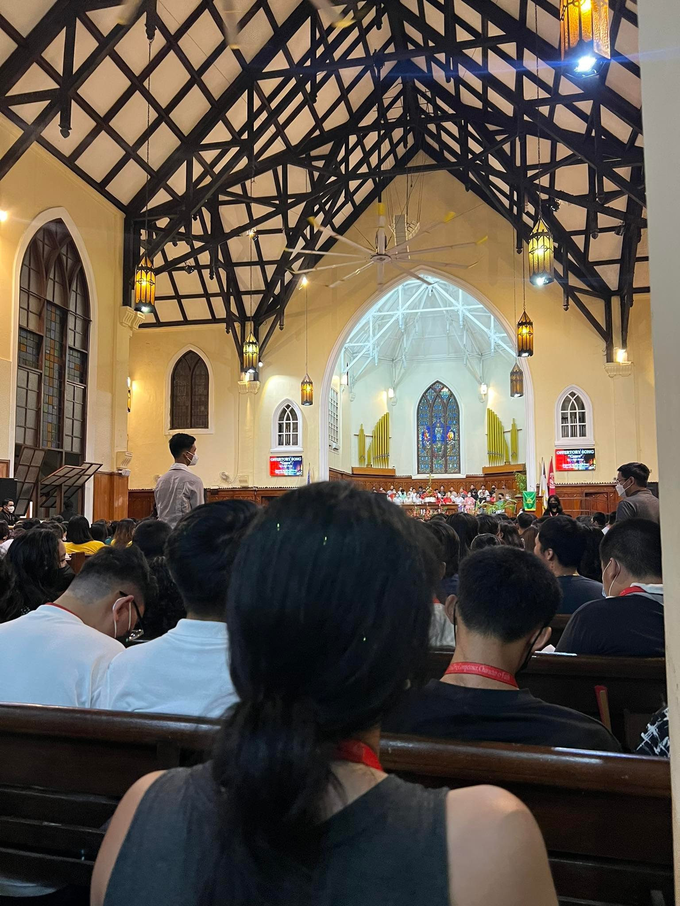
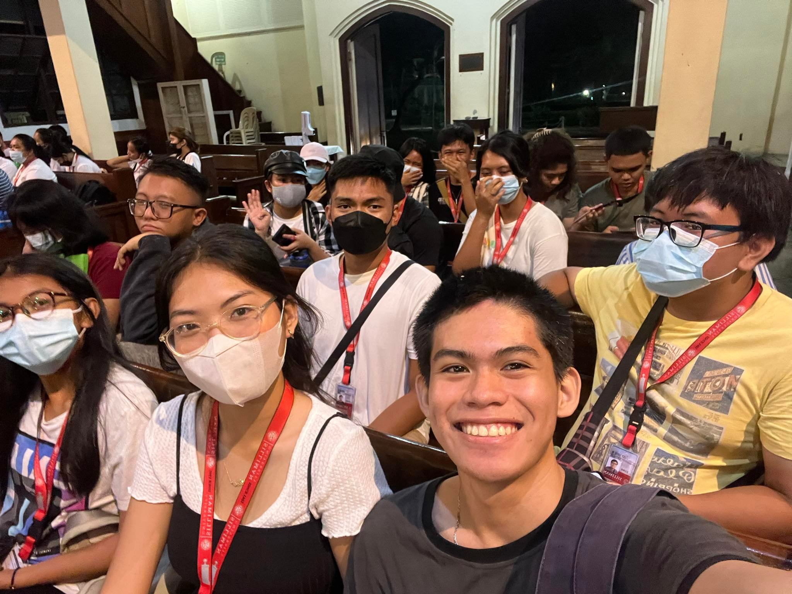

November 16, 2022, 6:30PM
UCLEM Glows Back!
Silliman University
Spectator
I am grateful for the opportunities and experiences I have had within the event and look forward
to continuing this journey of faith, growth, and impact alongside my fellow members.

November 17, 2022, 5:00pm
GALILEAN FELLOWSHIP
Silliman University
Participant
my journey within the Galilean Fellowship has been a profound and transformative experience.
It has nurtured my faith, a heart for service, fostered personal growth, and cultivated
lifelong relationships.